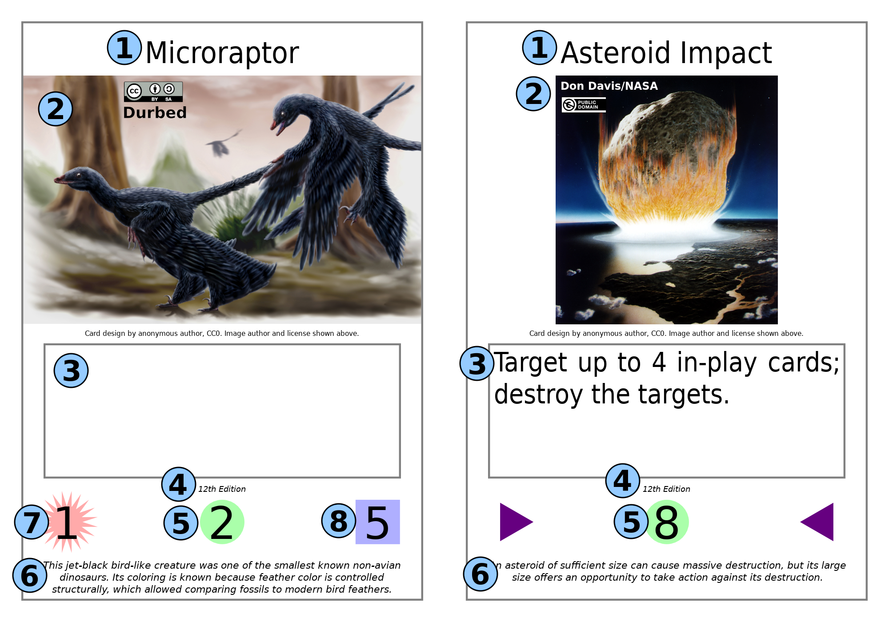
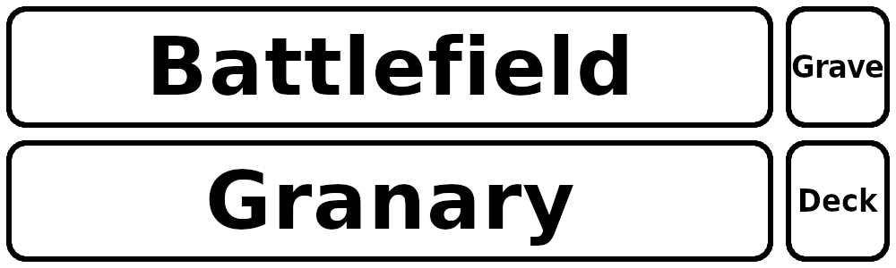

Rulebook (20th Edition)
Keeper of the Cards is a competitive trading card game. It is loosely inspired by and similar to several popular trading card games, but featuring a system which not only allows, but directly encourages players to create their own card designs, as outlined in the Card Building Guide.
Keeper of the Cards can be played by 2 or more players. There is theoretically no limit, but it is recommended to keep the number of players small, preferably between 2 and 8. Regardless of the number of players, each player acts alone and every other player is an enemy. The goal of a game of Keeper of the Cards is to reduce the HP of all enemy players to 0, while keeping your own HP above 0. You accomplish this by using the cards which form your deck to battle and activate abilities.
Contents
Card Types and Layout
There are 2 types of cards in Keeper of the Cards: minions, and spells. Here are some examples of both:

The card on the left is a minion, and the card on the right is a spell. They are visually very similar; the only noteworthy difference is that spells have a pair of triangles instead of the additional elements found on a minion.
The elements marked on the cards are:
- The name of the card. This is purely cosmetic and has no effect on the game.
- The card image. This is purely cosmetic and has no effect on the game.
- The ability text of the card.
- The Edition Indicator, which indicates the edition of the game the card was designed for.
- The level of the card.
- The Ultra Points value of the card. Each deck is allowed to contain no more than 10 Ultra Points in total. If this is not present, the card is worth 0 Ultra Points.
- The SP of the card.
- The HP of the card.
- The flavor text of the card. This is purely cosmetic and has no effect on the game.
Setup and Deck Building
Prior to starting a game of Keeper of the Cards, each player must assemble a deck. When building a deck, you must adhere to the following requirements:
- The deck must contain 40–60 cards created as detailed by the Card Building Guide.
- The total amount of Ultra Points in the deck must be no greater than 10.
- All cards must look the same from the back (this can be achieved by using sleeves if necessary).
- All cards must have an Edition Indicator showing what edition of Keeper of the Cards they were designed for.
- Pruned cards, defined under Refurbished and Pruned Cards, may not be used.
You can find preëxisting starter decks, as well as a template for designing your own cards, in the Starter Set.
In addition to one deck for each player, there should be a reasonable amount of six-sided dice (preferably at least 10–20 dice), and some objects such as coins or poker chips to use as counters. Depending on the cards in your deck, you may also find it useful to have blank minion cards to use as pawns.
Before each game, all players must shuffle their decks. Each player begins the game with 35 HP, which you can note on a piece of paper or thru some other counter. Decide which player will go first; one method is for each player to roll a six-sided die and for the player with the highest roll to go first.
After your deck has been shuffled, draw 5 cards for your initial hand; to draw a card is to take the topmost card from your deck and add that card to your hand. Once, optionally, you may then immediately mulligan your initial hand: bury – place on the bottom of your deck in any order – any number of cards in your hand, then draw a number of cards equal to the number of cards buried.
Zones

Each player has a play area: a designated area where cards are played, divided into several distinct zones which each have a specific purpose. Each zone's contents are classified as either public knowledge, in which case all players are entitled to know what cards are in the zone; private knowledge, in which case all players are entitled to know the number of cards in the zone, but only its owner is entitled to know what cards are in the zone; or restricted knowledge, in which case all players are entitled to know the number of cards in the zone, but no player (not even its owner) is entitled to know what cards are in the zone. The zones are as follows:
- Deck: Typically below the grave, to the right of the granary. The contents of the deck are restricted knowledge.
- Grave: Typically above the deck, to the right of the battlefield. Any card which is destroyed is immediately sent here, face-down. The contents of the grave are private knowledge.
- Battlefield: Typically above the granary, to the left of the grave. Contains its owner's on-field minions. The contents of the battlefield are public knowledge.
- Granary: Typically below the battlefield. Contains its owner's resources. The contents of the granary are private knowledge.
- Hand: Typically held in the hand. Contains the cards its owner currently has available to play. The contents of the hand are private knowledge.
Turn Order
Each turn in Keeper of the Cards consists of the following phases:
- Draw Phase: Draw 1 card.
- Special exception: on the first turn of the game, the player who goes first skips this phase.
- Resource Phase: You may optionally sow 1 resource. A resource is sowed by placing any card from your hand into the granary unexhausted (oriented vertically) and face-down.
- Action Phase: You may play any cards from your hand that you are able to, and you may also activate on-field minion abilities. See Minions and Spells for more information.
- Battle Phase: You may do battle with your unexhausted minions. See Battles for more information.
- Recovery Phase: Every on-field minion and every resource (for all players) is unexhausted. Every on-field minion has its SP, HP, and level reset to its original SP, original HP, and original level, respectively (reversing any damage or other changes to SP, HP, or level due to card abilities).
Exhaustion and Recovery
Exhausted, for any card, means that the card cannot currently be used; this is marked by having the card in a horizontal (sideways) orientation. By contrast, unexhausted means that the card can currently be used; this is marked by having the card in a vertical (upright) orientation. To exhaust a card, rotate it to a horizontal orientation. To unexhaust a card, rotate it to a vertical orientation. Cards are only unexhausted during the Recovery Phase.
During the Recovery Phase, all cards in every player's battlefield and granary are unexhausted. In addition, every minion in every player's battlefield has its SP, HP, and level returned to its original SP, original HP, and original level, respectively. This effectively reverses any changes to these values that might have happened, including damage. As such, changes to an on-field minion's SP, HP, and level effectively last only for the turn in which they take effect, even thô this is not explicitly stated in card effects.
Resource Cost
All cards inherently have a resource cost. To pay a card's resource cost is to exhaust a number of unexhausted resources in your granary equal to its level. For example, to pay the resource cost of a level 3 card, exhaust 3 of your currently unexhausted resources by turning them sideways.
Minions
Minions are cards which are used to do battle and may also have special abilities. Minions must be summoned from your hand to the battlefield before they can be used, but once they are summoned, they can be used indefinitely as long as they remain on the battlefield.
To summon a minion: pay its resource cost, then place it, face-up and exhausted, into the battlefield.
Minions can have any number of abilities. Each ability is designated on a separate paragraph, with a name indicated. If a minion has multiple abilities, only one can be activated at a time. To activate a minion ability whose activation condition is met, the minion must be on-field and unexhausted, and you must exhaust it as a cost (unless this is overridden by a special keyword, such as ghost-play, in the ability's activation condition). After that, perform the steps described for activation of an ability in Abilities.
Additionally, minions have SP – the minion's capability for inflicting damage in battles; and HP – the minion's tolerance for taking damage. Damage is the reduction of a player's or minion's HP by a given amount. When a minion takes an amount of damage greater than or equal to its HP, it is destroyed. Additionally, if the amount of damage is greater than the minion's HP, the difference is inflicted as piercing damage to its controller. For example, if 6 damage is inflicted to a minion with 4 HP, the minion will be destroyed and its controller will take 2 HP of piercing damage.
If a normal minion has no abilities, it gains the Haste property; minions with Haste may be summoned unexhausted, allowing them to attack on the turn they are summoned.
Note: it is possible for a minion to initially have 0 HP; in such a case, any amount of damage will destroy the minion and be inflicted to its controller in full as piercing damage.
Damage is central to battles, which all minions can participate in; see Battles for more information.
Minions can also hold counters; see Counters for more information.
Pawns
Pawns are special minions which do not exist as true cards and are summoned only by abilities. Unlike normal minions, pawns only ever exist on the battlefield. When destroyed, otherwise moved to any zone other than the battlefield, or petrified, a pawn is instead permanently removed from the game and can no longer be targeted or otherwise interacted with. Pawns can never have the Haste property, even if they have no abilities. In every other respect, however, pawns are exactly the same as normal minions.
Chimeras
Chimeras are minions that are created by abilities which attach minions. To attach a minion is to stack it on another on-field minion with the same controller (chosen by you), creating a new chimera. Creation of a chimera is never a summon. Only on-field minions can be attached.
The minion cards and/or pawns the chimera is made of become its constituents, and are no longer treated as individual on-field minions. The chimera, on creation, is treated as a brand new minion (not retaining any counters or effects applied to its constituents), and is exhausted. The chimera's original level, SP, and HP are equal to the combined original level, SP, and HP of all of its non-petrified constituents, and it has each of the abilities of all of its non-petrified constituents.
If a chimera's constituents change for any reason, or if any of its constituents become petrified when they previously were not, its original level, original SP, original HP, and abilities are always immediately updated to match its new set of constituents. Its current level, SP, and HP also immediately reset to be equal to its new original level, SP, and HP. If a chimera only has one constituent remaining, it ceases to be a chimera and becomes an individual minion again. If all of a chimera's constituents are petrified, the chimera itself is also considered to be petrified.
A chimera is used and interacted with in the same way as a normal minion. However, when a chimera would be destroyed or otherwise moved to a location other than the battlefield, or when the chimera would be petrified, the chimera's controller selects one of the chimera's constituents; the selected constituent is affected instead of the chimera.
Spells
Spells are cards that only have a single ability. Spells can be cast from your hand. To cast a spell whose activation condition is met, reveal the spell and pay its resource cost; at this point, the spell is in limbo, meaning it is not present in any zone. Then, perform the steps described for activation of an ability in Abilities. After the spell's ability resolves, if it is still in limbo, send it to the grave.
Abilities
A card's abilities are indicated in the ability text. Each ability is composed of the following components in the following order:
- Ability name (minion abilities only): The name of the minion ability. Has no effect on gameplay, but used to help facilitate communication.
- Activation condition: Indicates under what condition the ability can be activated, followed by a colon (:). If no explicit activation condition is present, the ability's activation condition is the standard activation condition, meaning it may be used only during your own Action Phase, and only as chain link 1.
- Activation cost: Indicates a special cost paid upon activation of the ability, followed by an arrow (→).
- Sub-abilities: Composed of an optional target selection, indicating what cards are treated as targets for the sub-ability, and 1 or more effects, indicating what the sub-ability does. Each ability can have any number of sub-abilities; each sub-ability is a separate sentence.
Abilities whose activation condition is met can be activated. The way to do this depends on card type, but once an ability is activated, perform the following steps:
- If the ability has any activation costs, immediately pay all of them. If you cannot, the ability fails. Otherwise, immediately select the targets for all sub-abilities as instructed by each sub-ability's respective target selection (in sequence), and the ability becomes a chain link and either starts or continues a chain. (See Chains for more information.)
- Wait for the ability to resolve in the chain. When it does, do what every sub-ability says to do in sequence. If any effect is impossible as stated on the card text, it does nothing, but does not prevent resolution of the rest of the ability.
Once a target is selected for a sub-ability, it remains that sub-ability's target, even if it changes location, and the sub-ability's effects are applied normally to it as long as it still exists in the game.
Many abilities make use of special keywords; see Keywords for a list of explanations for all of these keywords.
Abilities can optionally have tutorial text in parentheses, generally rendered in italics, after the end of the ability text. Tutorial text only exists to teach mechanics, and has no actual effect on the game.
Counters
A counter is an element, generally represented by arbitrary objects such as coins or poker chips, which can be placed on an on-field minion, preparing an effect for future use. It stays on the minion it is placed on until either the minion is moved to a zone other than the battlefield, or the counter is removed by some other means.
There are several different types of counters, each of which has a different effect which can be triggered by popping it. To pop a counter is to remove it and then trigger its effect – execute it as described in this section for the respective counter type. Counter effects are broadly classified into three categories: proactive counter effects, reactive counter effects, and hybrid counter effects.
- A proactive counter effect starts a chain or, alternatively, responds to an existing chain, similar to abilities. However, it can be triggered in any phase of any player's turn, restricted only by chain rules. See Chains for more information.
- A reactive counter effect does not start a chain or respond to a chain, and is not restricted by chain rules. However, it can only be triggered in specific circumstances. If multiple players are able to pop a reactive counter at the same time, the player whose turn it is gets the first opportunity to pop their reactive counters, followed by all other players going clockwise.
- A hybrid counter effect starts a chain or, alternatively, responds to an existing chain, similar to abilities, and also can only be triggered in specific circumstances.
Additionally, the following rules apply to all counters:
- Popping a counter does not require exhausting the minion it is on since the effect is that of the counter, not of the minion.
- The player who placed a counter is considered to be the counter’s “owner” and “controller” and is the one who can pop it, regardless of who the controller of the minion is.
- Removing the counter as a part of popping it is done immediately when the effect is triggered.
Following is a list of counter types which are currently available, and an explanation of each counter type's effect. Here, the host refers to the minion that the counter was on when it was popped.
- Sword Counter (proactive): Target the host; increase its SP by 1.
- Shield Counter (reactive): When the host would take damage from a die: Zero the damage of that die.
- Effigy Counter (reactive): When the host takes damage from a die: Inflict damage to any enemy minion equal to the result of that die.
- Weakness Counter (proactive): Target the host; decrease its SP to 0.
- Damage Counter (proactive): Target the host; roll a six-sided die and inflict damage to the target equal to the result.
- Exhaustion Counter (proactive): Target the host; exhaust it.
- Fatigue Counter (proactive): Target the host; fatigue it.
- Berzerk Counter (proactive): Target a valid victim for the host; immediately after the current chain finishes resolving, force the host's controller to initiate a battle, with the host (alone) as the attacking team and the target as the victim, as if it was the host's controller's Battle Phase (separate from any other Battle Phase this turn), but do not exhaust the host, also, the host's abilities cannot be activated for the rest of this turn.
- Taunt Counter (hybrid): When the host's controller is the defending player in a battle, after Attack Formation: Target the host; change the victim to the target.
- Dodge Counter (hybrid): When the host is the victim in a battle, after Attack Formation: Change the victim to the host's controller.
- Medic Counter (hybrid): When the host attacks or defends, before Damage Allocation: Target the host; distract it, also roll a number of six-sided dice equal to the target's SP and increase the target's controller's HP by the result of the dice.
- Assassin Counter (hybrid): When the host attacks, after Attack Formation, if the host is the only minion in the attacking team and the victim is a minion: Skip Defense Formation.
- Dice Counter (reactive): When a die is rolled (no matter who rolled the die initially): Re-roll it.
- Trap Counter (reactive): When a chaining action is performed while the host is unexhausted: Once, when the host's controller is given an opportunity to respond to the current chain, they may exhaust the host to activate any ability of the host, ignoring its activation condition, as a new chain link to the current chain. (See Chains for more information.)
- Undying Counter (reactive): When the host would be destroyed by an effect, except as a result of taking damage: Prevent the effect that would destroy the host from resolving.
Chains
Due to activation conditions on abilities and the nature of how counters work, it is possible for multiple players to simultaneously be able to perform certain actions. Chains exist to clarify what exactly happens in these situations.
The following actions are all chaining actions, meaning they start or respond to a chain:
- Activating a minion's ability whose activation condition is met.
- Casting a spell whose activation condition is met.
- Popping a counter with a proactive or hybrid counter effect.
When a chaining action is performed and it isn't in response to an existing chain, a new chain starts and said chaining action becomes the first chain link of said chain. Then, all players, starting with the player to the left of the player who started the chain and then going clockwise, are given an opportunity to respond to the chain by performing chaining actions of their own. If any player decides to respond to the chain, all players are again given the opportunity to respond to the chain, this time starting with the player to the left of the player who last responded and then going clockwise. This process is repeated until all players consecutively decide not to respond to the chain.
Whenever any chaining action is performed, any applicable activation cost is paid immediately, and any target selections are immediately made. Effects, however, are not executed immediately. Instead, once all players are done responding to the chain, the chain begins resolving: in reverse order (starting with the most recent chain link and working backwards), each chain link's effects are actually executed, which is referred to as resolving the effects.
For example, when resolving a chain where chain link 1 is an ability with the effect, “Destroy the targets,”, and chain link 2 is the effect of a Weakness Counter, then resolution of the chain goes as follows:
- The effect of the Weakness Counter removed for chain link 2 resolves, decreasing the SP of the card it was on to 0.
- The effect of the ability activated for chain link 1 resolves, destroying the cards it targeted.
Only 1 chain can be active at a time, and no chaining actions can be performed while a chain is resolving; if a chain is resolving, any player who wishes to perform a chaining action must wait until the chain finishes resolving, and can then start a new chain.
Battles
Battles are the primary way for players to advance the game state of Keeper of the Cards. Battles enable damaging other players' HP and destroying their on-field minions. During your turn, you may initiate any number of battles during your Battle Phase. When you initiate a battle, you become the attacking player. Each battle consists of the following steps:
- Attack Formation: The attacking player enlists any number of their on-field unexhausted minions by exhausting them – the enlisted minions become the attacking team – and declares 1 victim: a player or a minion which the attacker wants to inflict damage to. Any given player can only be declared as a victim once per Battle Phase, and any given minion can only be declared as a victim once per Battle Phase while it remains on-field. The player declared as a victim, or the controller of the minion declared as a victim, becomes the defending player. The attacking player selects and announces the formation order of the attacking team – the order in which these minions will take damage.
- Defense Formation: The defending player may enlist any number of their on-field unexhausted minions (which may or may not include the victim itself) by exhausting them – the enlisted minions become the defending team. If they do this, they then select and announce the formation order of the defending team.
- Damage Allocation: The attacking player rolls a number of six-sided dice equal to the total SP of the attacking team, and the defending player rolls a number of six-sided dice equal to the total SP of the defending team. Then, each player must take each of their rolled dice, 1 at a time (in any order), and inflict the result as damage to the next surviving minion in the other player's team (based on the respective formation order selected) until either all dice are used or all minions in the respective team are destroyed. If any of the attacking team's dice remain, inflict the total result of these remaining dice as damage to the victim, or if the victim is a minion which is no longer on-field, to the victim's controller instead.
Any enlisted minion which moves to another zone or whose controller changes after it is enlisted is implicitly withdrawn from its respective team.
For the purposes of timing, everything which occurs in each step is considered to occur simultaneously. As such, any action which starts a chain cannot be taken during one of the steps and must wait until the respective step is completed.
Endgame
The game ends when any of the following endgame conditions are met:
- When all players have 0 HP.
- When all players but 1 have 0 HP.
- When any player is made to draw a card while their deck is empty.
- When all players agree that there is no reason to continue the game.
A player's HP cannot be lower than 0. Until an endgame condition is met, players with 0 HP, referred to as zombie players, continue to play as normal. Zombie players can regain a chance at winning the game by gaining HP before an endgame condition is met.
Once the game ends, use the following criteria to determine the winner. For each criterion, if it designates a single player, that player is considered the winner. Otherwise, check the next criterion only with the players who passed the previous criterion. If all criteria fail to designate a single player, the game ends in a tie between all players who were designated by the criteria.
- The player who was not made to draw while their deck was empty.
- The player with the most HP.
- The player whose on-field minions' total combined levels is the highest.
- The player with the largest number of cards in their deck.
Keywords
This section lists common keywords used in card text, including any important nuances for said keywords.
Attach
To attach a minion is to stack it on another on-field minion with the same controller, creating a new chimera. Only on-field minions can be attached.
See Chimeras for an explanation of what chimeras are and how they work.
Attack
A minion attacks when it is enlisted by an attacking player into an attacking team.
Bounce
To bounce a card is to place it in its owner's hand.
Bury
To bury a card is to place it on the bottom of its owner's deck. When burying multiple cards at once, you choose the order.
Chimera
See Chimeras for an explanation of what chimeras are and how they work.
Clone
To clone a card is to reveal it and then, if it is a minion, optionally summon a pawn with the exact same original SP, HP, level, Ultra Points, and abilities as the minion, paying the usual cost for summoning the minion which is being cloned.
Conscript
To conscript a minion is to, if there is currently a battle ongoing for which the minion's controller is the attacking player or defending player, and the minion is not in its controller's respective team: exhaust the minion and enlist it into its controller's respective team, but if it was already exhausted when it was conscripted, fatigue it. If the minion is conscripted after the respective formation step, the controller of the minion then reselects their team's formation order.
Only an on-field minion which is either unexhausted or not fatigued can be conscripted.
Constituent
A constituent is a minion card or pawn which forms a part of a chimera.
See Chimeras for an explanation of what chimeras are and how they work.
Controller
The controller of a card is the player whose zone it is in, regardless of who its owner is. So for example, if you use an effect to summon a minion owned by another player, you are its controller while it remains in your battlefield and can use it the same way as minions in your battlefield owned by you.
When the controller of a card changes (as can happen with the hypnotize effect), its location is implicitly changed to the play area of its new controller, in the zone it was in when its controller changed. For example, if a minion in the battlefield of player 1 is hypnotized and its controller changed to player 2, it is moved to the battlefield of player 2.
Counter
See Counters for an explanation of what counters are and how they work.
Craft
To craft a pawn is to summon a pawn of a given level, assigning SP and HP based on said level.
To determine the SP and HP of a crafted pawn: a number of times equal to the pawn's level, decide whether to add 1 SP to the pawn or to add 2 HP to the pawn. This directly mirrors the relationship between level, SP, and HP in normal minions. The resulting pawn is guaranteed to also be a valid normal minion design.
For example, a level 2 crafted pawn could have one of the following distributions of SP and HP:
- 2 SP and 0 HP
- 1 SP and 2 HP
- 0 SP and 4 HP
Damage
A minion is damaged when any amount of damage greater than 0 is inflicted to it.
Defend
A minion defends when it is enlisted by a defending player into a defending team.
Deploy
To deploy a card is to reveal it and then optionally summon it (if it is a minion) or cast it (if it is a spell), paying the usual cost for doing so.
Minions which are already on-field cannot be deployed and thus are excluded.
When casting a deployed spell, the spell does not start a new chain, but instead resolves immediately as if it were a part of the ability which deployed it. Additionally, the spell's activation condition is ignored; any deployed spell can be cast regardless of its activation condition.
Destroy
To destroy a card is to cause it to be sent to its owner's grave.
Dice-burn
To dice-burn the battlefield is to roll the indicated number of six-sided dice, assign each die to an on-field enemy minion, and inflict damage to the respective minion equal to the roll of the respective die.
Dice-burning the battlefield is similar to to the Damage Allocation step of a battle, except that you (the player dice-burning the battlefield) have full control over what enemy minions are damaged and how the dice are distributed.
Dice-heal
To dice-heal a player is to roll the indicated number of six-sided dice and increase their HP by the total indicated on the dice. For example, to 3-dice-heal a player, roll 3 six-sided dice; if the results of the dice are 4, 1, and 3, the player gains 8 HP.
Dice-wound
To dice-wound a player is to roll the indicated number of six-sided dice and inflict the total result as damage to the player.
Distract
To distract a minion is to withdraw it from any attacking team or defending team it is currently enlisted in.
Donate
To donate a card is to reveal it and allow enemy (optionally) to summon it (if it is a minion) or cast it (if it is a spell) without paying its resource cost, and (if it is a spell) without paying its activation cost. If enemy opts not to do so, the card remains where it is.
When casting a donated spell, the spell does not start a new chain, but instead resolves immediately as if it were a part of the cost which donated it. Additionally, the spell's activation condition is ignored; any donated spell can be cast regardless of its activation condition.
Down-level
To down-level a card is to subtract the amount from the card's level. A card's level can never be less than 0.
The down-level effect persists for the card until the Recovery Phase, regardless of where the card was when it was down-leveled and where it moves to.
Draw
To draw a card is to take the topmost card from your deck and add that card to your hand.
Each
When the term each is used to refer to targets or players, it means that each target or player is affected separately, e.g. any decision required by the effect is made for each card separately (and thus can differ between them).
Embody
To embody a card is to reveal it and then, if it is a spell, optionally summon a pawn with 0 SP, 0 HP, a level equal to the spell's original level, an Ultra Points value equal to the spell's Ultra Points value, and the spell's ability as the pawn's only ability, paying the usual cost for summoning a minion of the pawn's level. The resulting pawn is guaranteed to also be a valid normal minion design.
Enemy
Enemy means any player except for yourself, chosen by you if there is a choice to be made.
Enemy minion
An enemy minion is a minion whose controller is any player except you, regardless of its owner.
Enlist
To enlist a minion is to add it to either the attacking team or the defending team in a battle. Only unexhausted on-field minions can be enlisted.
See Battles for an explanation of how battles work.
Excavate
To excavate cards is to pick them up from the top of your deck and see them as a part of a target selection. The cards picked up are referred to as excavated cards. The excavated cards are still considered to be within the deck. After you're finished excavating, shuffle the excavated cards and return them to the top of the deck.
You must excavate only the exact number of cards indicated. If your deck currently has fewer cards than the number of cards the ability instructs you to excavate, no cards are excavated.
Exhaust
To exhaust a card is to turn it sideways. Conversely, to unexhaust a card is to turn it upright. Only on-field minions and resources can be exhausted.
Fatigue
To fatigue a card is to prevent it from being affected by the Recovery Phase until its controller's next turn. This means that it will not be unexhausted, and any changes to SP, HP, and level remain in effect, until its controller's next Recovery Phase which occurs after the end of the current turn. This effect does not stack; if 1 card is fatigued twice in a turn(s) prior to its controller's turn, this has the exact same effect as fatiguing the card once in that same timeframe. Only on-field minions and resources can be fatigued.
Ghost-play
A part of certain activation conditions, an ability with ghost-play can be activated regardless of where the card is and without the usual requirements for activating an ability of the respective card type. If the activation condition is ignored (as when an ability is activated by a Trap Counter), the ghost-play property does not apply.
Hand-down-level
To hand-down-level is to down-level cards in your hand by a sum total of the amount, distributed however you wish. For example, if you hand-down-level by 5, you could down-level one card in your hand by 2 and down-level another card in your hand by 3.
Haste
A minion with the Haste property can be summoned unexhausted, allowing it to attack on the same turn it is summoned. Only normal minions (excluding pawns) with no abilities can have Haste, and all such minions do even if the card does not explicitly say so.
Heir
An heir is a pawn or chimera which the current ability is expected to create on resolution. When a sub-ability targets heirs, its effects apply on resolution to pawns or chimeras previous sub-abilities within the same ability have created which are still on the battlefield, in the order they were created. Each created pawn or chimera is only counted as a targeted heir once. If multiple pawns or chimeras are created at the same time, you choose the order in which those pawns or chimeras are counted as targeted heirs.
Hex-play
A part of certain activation conditions, an ability with hex-play can be activated regardless of where the card is by paying half of the card's resource cost, rounded upwards, instead of the usual requirements for activating an ability of the respective card type. If the activation condition is ignored (as when an ability is activated by a Trap Counter), the hex-play property does not apply.
Hypnotize
To hypnotize a minion is to change its controller to you until the Recovery Phase; this moves it to your play area and allows you to use it as if it was your own card. Only on-field minions can be hypnotized.
Imprison
To imprison a card is to take it out of the game until the Draw Phase of its owner's next turn, at which point it is added to its owner's hand. While it is imprisoned, it cannot be interacted with in any way.
Issue
To issue counters is to place them on any on-field minion(s).
See Counters for an explanation of what counters are and how they work.
It
The term it within an ability refers to the ability's target. The term is used only in cases where the ability can only ever have a single target.
Natural-summon
A minion is natural-summoned if it is summoned normally, rather than by an effect. For example, a minion which is summoned because it was deployed is not natural-summoned.
Negate
To negate a card is to prevent its effects from resolving in the current chain.
On-field
The term on-field refers exclusively to minions in the battlefield. Minions cease being on-field the moment they are destroyed or otherwise moved to any location other than the battlefield.
Resources and spells are never considered to be on-field at any point.
Original
The original SP, HP, or level of a card is the SP, HP, or level (respectively) which it had when it was created. In the case of normal minions and spells, this is the respective value printed on the card.
Owner
The owner of a card is always the player whose deck it originates from, regardless of who its controller is.
Petrify
To petrify an on-field minion is to remove all counters on it, flip it face-down, and count it as petrified until it is moved to a zone other than the battlefield. While a minion is petrified: it cannot attack, defend, or use its abilities; it cannot be chosen as a victim; it cannot take damage; counters cannot be placed on it; it has no SP, HP, or level value; and its identity is private knowledge.
Remove
To remove a card, pawn, or counter is to take it out of the game permanently. Once removed, it is considered to no longer exist and cannot be used in any way.
Reveal
To reveal a card is to show it to all players, including yourself.
See
To see a card or a zone is to look at the card/zone which is normally private or restricted knowledge, without showing any other player. For example, if you see another player's hand, they must allow you (and only you) to look thru and read all of the cards in their hand.
Sheathe
To sheathe a card is to place it on the top of its owner's deck. When sheathing multiple cards at once, you choose the order.
Silo
To silo a card is to place it into its owner's granary, exhausted and face-down.
Spell-play
A part of certain activation conditions, an ability with spell-play is activated by casting the card it is on as if it were a spell as detailed in Spells, even if it is a minion. If the activation condition is ignored (as when an ability is activated by a Trap Counter), the spell-play property does not apply.
Target
Used as a verb, the word target instructs on how to select the targets of a sub-ability. Used as a noun, target or targets refers to all cards which have been selected by the aforementioned target selection text within the same sub-ability. (Each sub-ability is on a separate sentence within the ability.)
Sub-abilities that target cards can always be made to target less than the number indicated on the card if the player who activated the ability wishes. For example, if an ability targets 1 on-field minion, you can choose to target 0 on-field minions instead.
If a target selection involves making a choice of cards, you may choose the same card multiple times as if it were two different cards. If you do this, each effect of the sub-ability acts on the card the number of times you targeted it.
You
You and yourself always refer to the player who is using the card in question, i.e. its controller or the player summoning or casting it, regardless of who its owner is. Similarly, your always refers to that player's play area, and minions whose controller is that player, regardless of who their owners are.
Refurbished and Pruned Cards
As the game develops, any given card made for old editions can become outdated. In that case, one of two things happens: either the card is refurbished – meaning the card's outdated text is substituted for some other, newer card text; or the card is pruned – meaning it is no longer a valid card for use in a game. This section exhaustively lists all cases in which cards are refurbished or pruned.
To assist with this process, all cards are required to carry an Edition Indicator showing which edition the card was designed for. The indicated edition is referred to as the design edition. Any card with no Edition Indicator is invalid.
Clean Slate Edition
13th Edition is considered to be a clean slate edition, meaning that any card whose design edition is prior to 13th Edition is pruned.
Refurbished Card Texts
This section lists refurbished card texts. Any card containing any exact old text indicated here is refurbished as shown. These are listed in alphabetical order (based on the old text). Note: x, y, and z are replaced with numbers in cards. Additionally, “the targets” might be replaced with “it” in some card texts.
| Old Text | New Text |
|---|---|
| x-dice-wound yourself and enemy | x-dice-wound each player |
| x of your resources | x cards in your granary |
| ghost-play, must pay resource cost | hex-play |
| gift-summon | donate |
| in-play card | on-field minion |
| self-bounce x on-field minions | bounce x minions in your battlefield |
| self-destroy x on-field minions | destroy x minions in your battlefield |
| self-destroy x random cards in your hand | destroy x cards in your hand |
| self-destroy x resources | destroy x cards in your granary |
| self-exhaust x minions | exhaust x minions in your battlefield |
| self-exhaust x on-field minions | exhaust x minions in your battlefield |
| self-exhaust x resources | exhaust x cards in your granary |
| self-sheathe x on-field minions | sheathe x minions in your battlefield |
| self-sheathe x random cards in your hand | sheathe x cards in your hand |
| self-sheathe x resources | sheathe x cards in your granary |
| summon x level y pawns | craft x level y pawns |
| this card as a resource | this card in your granary |
| Voodoo Counter | Effigy Counter |
| When this card is summoned (ghost-play): | When this card is natural-summoned (ghost-play): |
| When this on-field minion is damaged: | When your on-field minion(s) is damaged: |
| When this on-field minion is destroyed (ghost-play): | When this card in your battlefield is destroyed (ghost-play): |
| When this on-field minion is targeted: | When this card is targeted: |
| When your on-field minion(s) (excluding this card) is damaged: | When your on-field minion(s) is damaged: |
Redacted Card Texts
This section lists card texts which have been redacted. Any card containing any exact text indicated here is pruned. These are listed in alphabetical order. Note: x, y, and z are replaced with numbers in cards. Additionally, “the targets” might be replaced with “it” in some card texts.
- “pay x HP” (18th Edition)
- “self-bury x cards in your hand” (18th Edition)
- “self-bury x on-field minions” (18th Edition)
- “self-bury x random cards in your hand” (18th Edition)
- “self-bury x resources” (18th Edition)
- “self-destroy x cards on top of your deck” (18th Edition)
Revised Levels
This section lists card texts whose effects on level have been revised, and the edition in which such revision occurred. Any card containing any exact text indicated here, and whose design edition is older than the revision edition for the respective text(s), is pruned. These are listed in alphabetical order. Note: x, y, and z are replaced with numbers in cards. Additionally, “the targets” might be replaced with “it” in some card texts.
- “x-dice-wound enemy.” (18th Edition)
- “See enemy's hand and target up to x cards therein” (18th Edition)
- “self-destroy x cards in your hand” (18th Edition)
- “self-sheathe x cards in your hand” (18th Edition)
- “sheathe the targets” (16th Edition)
- “silo the targets” (16th Edition)
- “Target up to x cards in your hand” (18th Edition)
Revised Ultra Points
This section lists card texts whose Ultra Points values have been revised, and the edition in which such revision occurred. Any card containing any exact text indicated here, and whose design edition is older than the revision edition for the respective text(s), must have its Ultra Points recalculated for the purpose of determining the total Ultra Points in a deck. Note: x, y, and z are replaced with numbers in cards. Additionally, “the targets” might be replaced with “it” in some card texts.
- “x-dice-wound yourself and enemy.” (18th Edition)
- “negate the targets.” (19th Edition)
- “place x Trap Counters on each target.” (19th Edition)